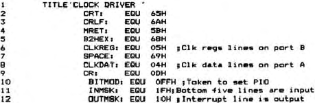

Nascom Newsletter |
Volume 3 · Number 2 · May 1983 |
| Page 10 of 36 |
|---|
perhaps day of week. I intend having only one routine to read the clock, which will form part of a set of extended monitor routines. Any program requiring clock data will call this routine, and from its information select the relevant data. When the chip changes (ticks?) between two reads, the register next read is set to 0Fh, to indicate faulty data. In this case it is necessary to reread the Completely. National Semiconductor recommend that you should wait for a 0FH signal from the clock before embarking on a full read. The routines listed here print ‘FAIL’ whenever a read fails for this reason, and proceed to try again. The decision on how best to cope with this I leave to you! Setting up a version of the same routines to read the clock and print the time on the screen indicates that a read takes approx 1 mS.
In using this chip, a useful adjunct is to acquire a copy of the National Semiconductor data sheet, which gives an overall view of the intricacies of the chip, in particular use of the interrupt. I’ve not achieved 100% reliability in my use of the interrupts and have therefore disregarded them in the interests of getting on with things, but I feel sure that this circuit will allow them to be used reliably. The software is probably capable of considerable improvement, but as listed here it works on a 4 Mhz machine. 2 Mhz may cause problems, as the width of the NRDS (Read strobe) should be limited to 15u5 max according to the datasheet.
I am very happy with this chip and recommend it without reserve in the circuit attached. If you are into Clocks, the May ’82 BYTE, in Ciarcia’s Circuit Cellar, shows a circuit for another NS chip. This chip is the MM58167A, which is slightly more expensive than the 58174, but offers a number of extra facilities. It will time from 1/10000 secs up to months, but knows nothing about leapyears. In addition, it has a low power interrupt mode, allowing it when powered down to signal an interrupt when a specified tine and date is reached. This could offer the possibility of your machine being able to turn itself on on Tuesdays at 2.50 p.m. to do whatever you wish! I intend to build a number of specialised boards for my Nascom, and am seriously considering incorporating the 58167A into them.
| Page 10 of 36 |
|---|